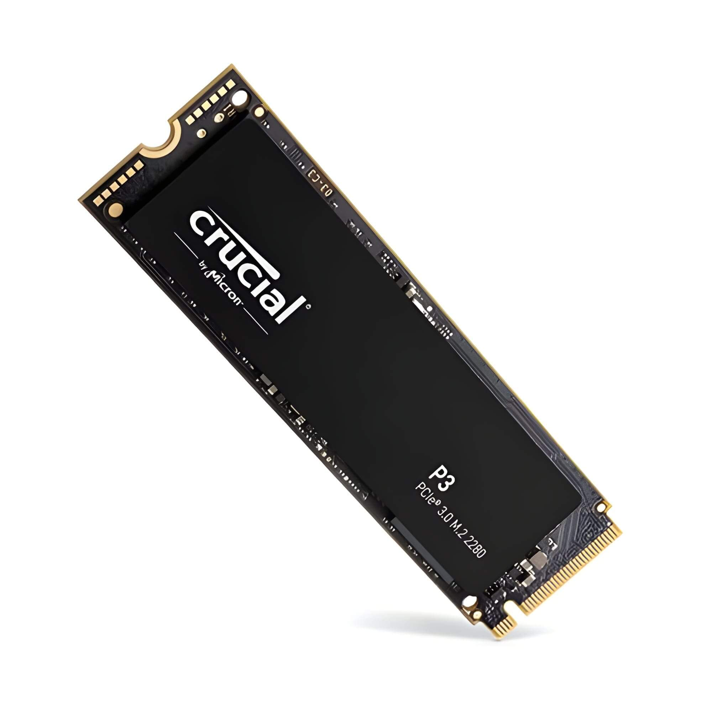
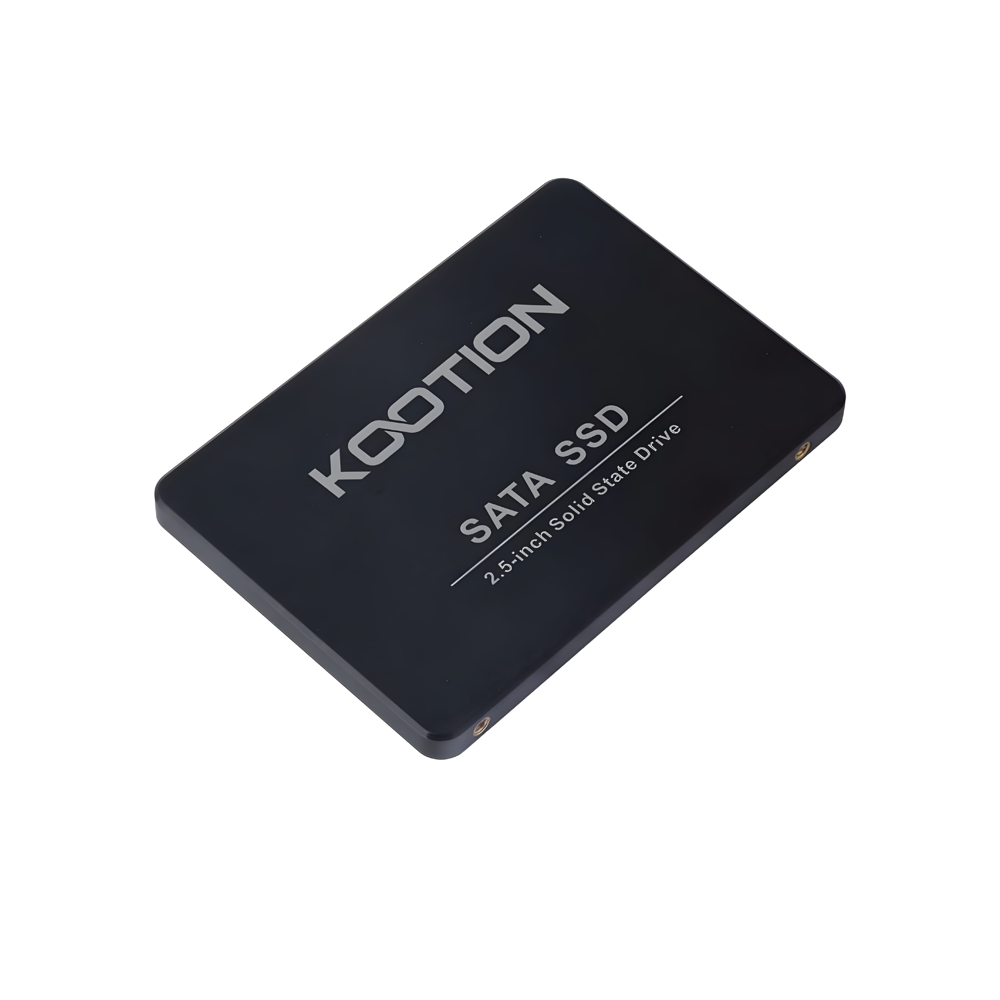
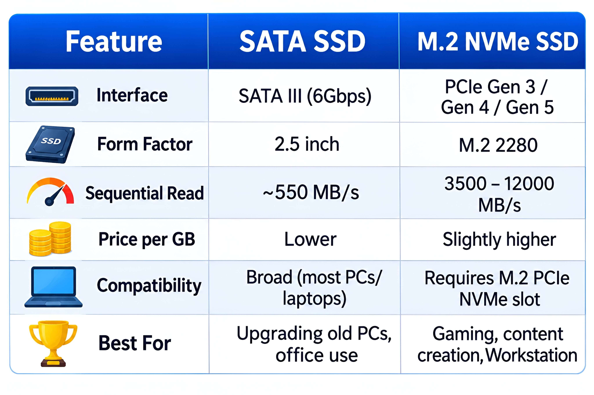
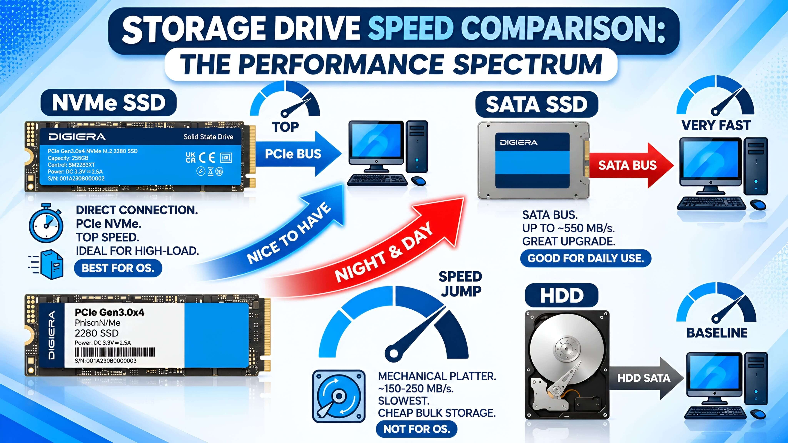
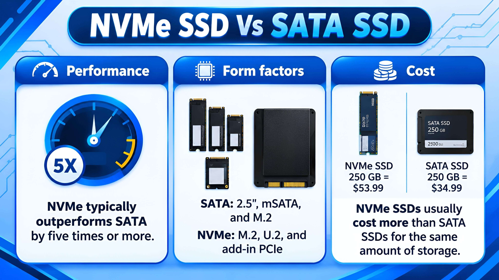
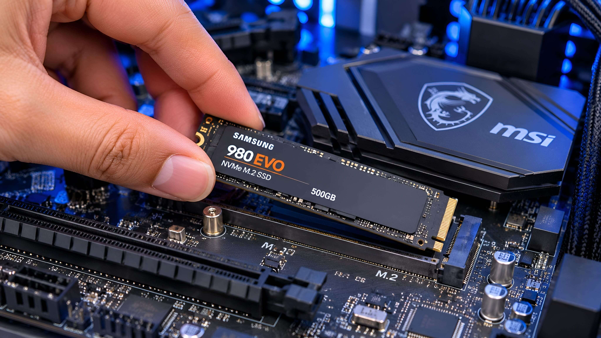
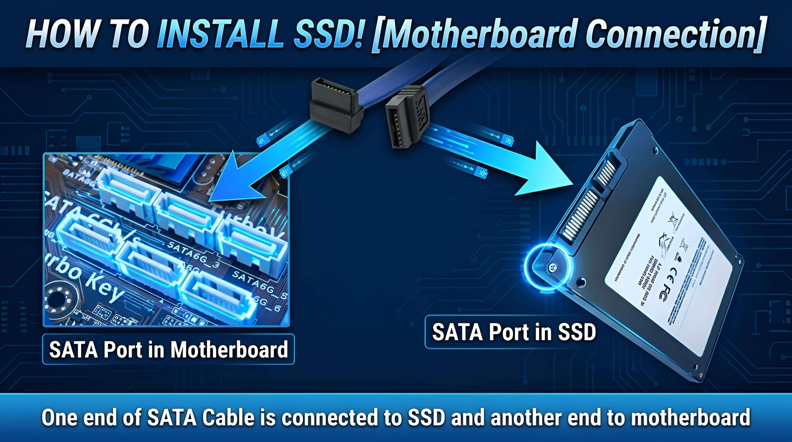

Choosing an SSD can feel confusing. You may see names like SATA, NVMe, PCIe, and M.2 when you shop for computer storage. They may look similar, but they do not all mean the same thing.
The main difference is how the drive sends data to your computer. A SATA SSD uses the SATA connection. An NVMe SSD uses the PCIe connection and the NVMe protocol. This lets many NVMe drives move data much faster.
In this guide, you will learn how both types work, how their speeds compare, and what to check before buying one.
1. What Is an NVMe SSD?

NVMe stands for Non-Volatile Memory Express. It is a communication protocol made for flash storage, such as SSDs. It allows an SSD to communicate with a computer through the PCIe connection.
PCIe can provide much more data bandwidth than SATA. NVMe is also designed to handle many storage requests at the same time. This helps modern NVMe drives deliver high speed and low response times.
Many laptop and desktop NVMe SSDs use the M.2 form factor. However, NVMe describes the protocol, not the physical shape of the drive. Some NVMe drives use other form factors too.
2. What Is a SATA SSD?

A SATA SSD is a solid-state drive that uses the SATA interface to connect to a computer. SATA was first made for storage devices such as hard drives. SSDs also use it because many computers already support this connection.
A common SATA SSD is a 2.5-inch drive. It usually connects with a SATA data cable and a SATA power cable in a desktop PC. Some SATA SSDs are also made in the M.2 shape.
SATA III has a link speed of 6 Gbit/s. After protocol overhead, a typical SATA SSD reaches around 500–550 MB/s in sequential transfers, although the exact result depends on the drive and system.
3. NVMe vs SATA SSD: Key Differences

Both drives store data on flash memory. The main difference is the path they use to send data to the computer. SATA SSDs use the SATA interface, while NVMe SSDs use PCIe with the NVMe protocol.
| Feature | SATA SSD | NVMe SSD |
|---|---|---|
| Connection | SATA | PCIe |
| Protocol | Usually AHCI | NVMe |
| Common shape | 2.5-inch or M.2 | M.2 is common; other forms exist |
| Typical speed range | About 500–550 MB/s for many SATA III SSDs | Varies by PCIe generation, lane count, and drive model; often several thousand MB/s |
| Compatibility | Needs a supported SATA connection | Needs a supported PCIe/NVMe connection |
| Best fit | Everyday use and older systems | Fast storage and demanding workloads |
Important: M.2 is a physical form factor. It does not always mean NVMe. An M.2 SSD can use SATA or PCIe, so check the drive and motherboard specifications before you buy.
4. Speed and Performance Comparison

Sequential read and write speed
Sequential speed measures how fast a drive reads or writes large blocks of data in order. SATA III has a limit of 6 Gbit/s, so SATA SSDs usually reach around 500–550 MB/s in real-world sequential tests.
NVMe drives use PCIe. Their maximum speed depends on the PCIe generation, number of lanes, and SSD design. Many PCIe 3.0 and PCIe 4.0 drives can reach several thousand MB/s. Newer models may go higher, but not every computer can use their full speed.
Everyday tasks
For web browsing, office work, and watching videos, both types can feel fast. Moving large video files, working with large projects, or copying many files can show a bigger difference. The result also depends on the computer, software, and type of task.
Gaming and startup
An NVMe SSD can help with file loading and large game updates. But it does not guarantee a large increase in game frame rates. A SATA SSD can still make a computer feel much faster than a hard drive. The change from SATA SSD to NVMe may be less noticeable during basic tasks.
5. Pros and Cons of NVMe and SATA SSDs

NVMe SSD
- Pros: Much higher potential transfer speeds than SATA; low response times; a small M.2 option is common; useful for large files and demanding work.
- Cons: Your computer must support the correct PCIe/NVMe drive; some high-performance models can cost more; heavy workloads may cause heat and reduce speed if cooling is poor.
SATA SSD
- Pros: Works with many older computers that have SATA support; a good upgrade from an HDD; enough speed for many daily tasks; available in common 2.5-inch sizes.
- Cons: Much lower maximum transfer speed than modern NVMe drives; 2.5-inch models need the right cables and mounting space; it cannot use PCIe NVMe speeds.
6. Which SSD Should You Choose?

The best SSD depends on your computer and how you use it. A faster drive is not always the best choice if your system cannot support it or if you do not need the extra speed.
- Choose NVMe if your computer supports NVMe and you often move large files, edit high-resolution video, run demanding apps, or want a fast modern system drive.
- Choose SATA if your computer only supports SATA, if you are replacing a 2.5-inch hard drive, or if you mainly use your PC for browsing, office work, and everyday tasks.
- Keep both if your computer has the right connections and you need extra storage. You can use an NVMe SSD for your operating system and apps, then use a SATA SSD for files and other data.
If you are also comparing older and newer storage, read our guide to SSD vs HDD. It explains why an SSD is a common upgrade from a traditional hard drive.
7. How to Check SSD Compatibility
Do not buy an SSD based only on its shape. Check your computer's manual or motherboard specifications first. Use these steps:
- Find your computer model. For a desktop PC, find the exact motherboard model. For a laptop, find the full model number.
- Check the storage section. Look for supported drive types, such as 2.5-inch SATA, M.2 SATA, or M.2 PCIe NVMe.
- Check the M.2 slot. Confirm whether it supports SATA, PCIe/NVMe, or both. Not every M.2 slot supports every M.2 SSD.
- Check size and length. Many M.2 drives are 2280 size, but your computer may support other lengths or only one size.
- Check PCIe support. If the system supports a lower PCIe generation or fewer lanes, the drive may work at a lower speed than its advertised maximum.
- Check shared ports and setup notes. Some motherboards share lanes or ports. The manual can explain whether using one slot disables another port.
For more background, see the official guides from Kingston and Dell. Always use the manual for your exact device when checking compatibility.
8. Frequently Asked Questions

Is NVMe faster than SATA SSD?
Yes. NVMe uses PCIe and can reach much higher transfer speeds than SATA III. The exact speed depends on the PCIe version, lane count, and SSD model.
Is M.2 the same as NVMe?
No. M.2 is a physical size and connector standard. NVMe is a storage protocol used over PCIe. Some M.2 SSDs use SATA instead of NVMe.
Can I use an NVMe SSD in a SATA M.2 slot?
No, not if the slot supports SATA only. An NVMe drive needs a compatible PCIe/NVMe connection. Check your device manual before buying.
Can I use a SATA M.2 SSD in an NVMe-only slot?
Usually not. A slot that supports PCIe/NVMe only may not support an M.2 SATA drive. Check the motherboard or laptop manual.
Is a SATA SSD still worth buying?
Yes. A SATA SSD is still useful for older computers with SATA support and for everyday tasks. It can also be a good way to replace a hard drive.
Will an NVMe SSD make games run at higher FPS?
Usually, an SSD mainly helps with loading and file access. It does not normally create a large increase in frame rates. The graphics card and processor have a much bigger effect on FPS.
Can I use NVMe and SATA SSDs together?
Yes, if your computer has compatible connections and enough available ports or slots. You can use one drive for the operating system and another for extra storage.
Which is better for a laptop?
It depends on the laptop's supported storage type. If it supports NVMe, that can offer higher speed. If it only supports SATA, choose a compatible SATA SSD.
Final Thoughts
NVMe and SATA SSDs both make a computer faster than a traditional hard drive. NVMe is the better choice when you need high transfer speeds and your system supports it. SATA is still a useful and practical option for many older computers and everyday tasks.
Before you buy, check the exact storage support in your computer or motherboard manual. This simple step can help you avoid buying an SSD that does not fit or work with your system.